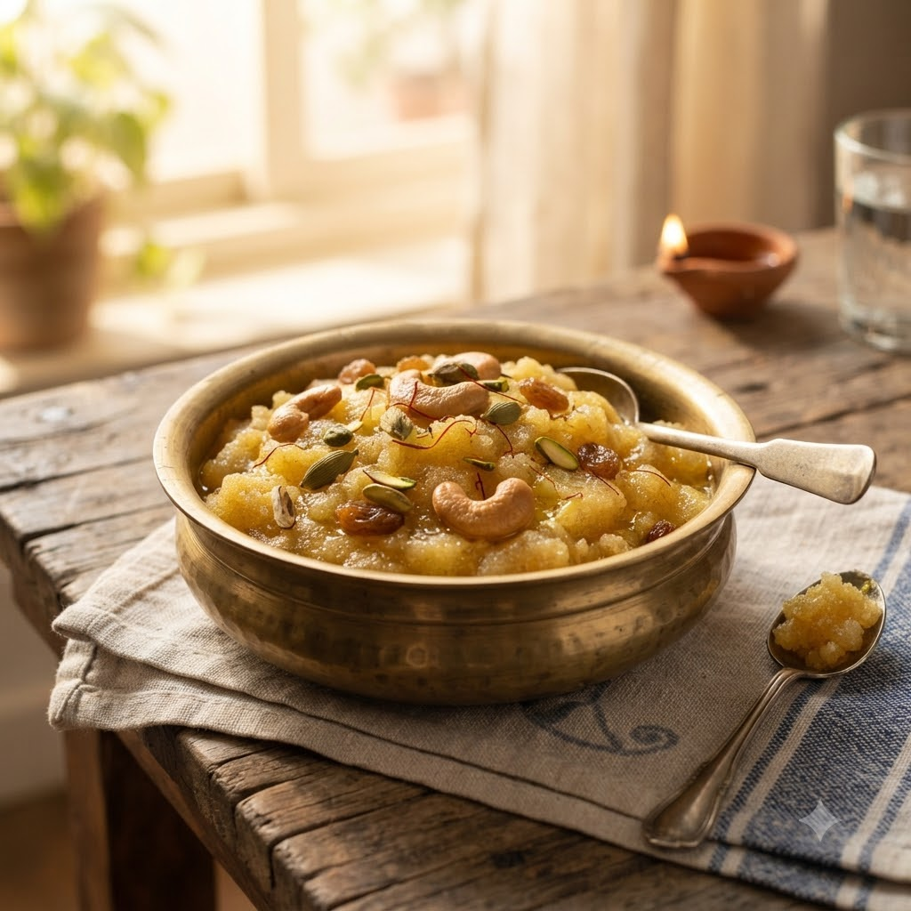

Sooji Halwa (Rava Kesari)

Sooji Halwa (Rava Kesari)
Chef Magic – Sauté + Boil Auto 16 min — Serves 4
Ingredients
- 1 cup sooji (semolina)
- 1/2 cup sugar
- 3 tbsp ghee
- 2 cups water
- 10 cashews & raisins
- 1/4 tsp cardamom powder (elaichi powder)
- A few saffron (kesar) strands (optional)
Method
1Add ghee, cashews and raisins to the jar; select Sauté (Speed 2–4, ~130–160°C) until golden.
2Add sooji and sauté 4 minutes until fragrant and lightly toasted.
3Add water and sugar; select Boil (Speed 1–2, 100°C) and cook, stirring, until the mixture thickens and leaves the sides of the jar.
4Stir in cardamom and saffron; serve warm.